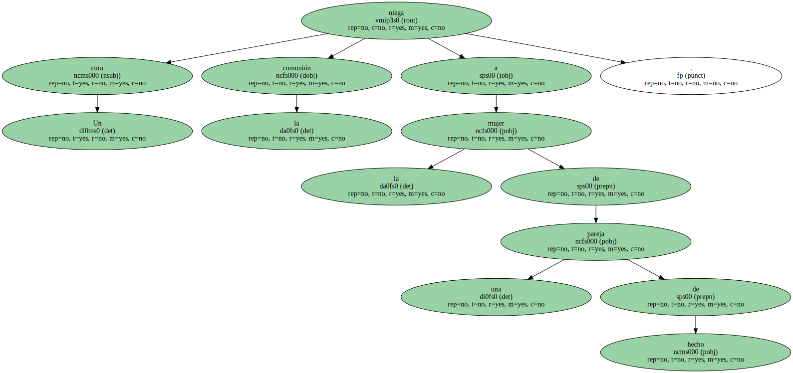
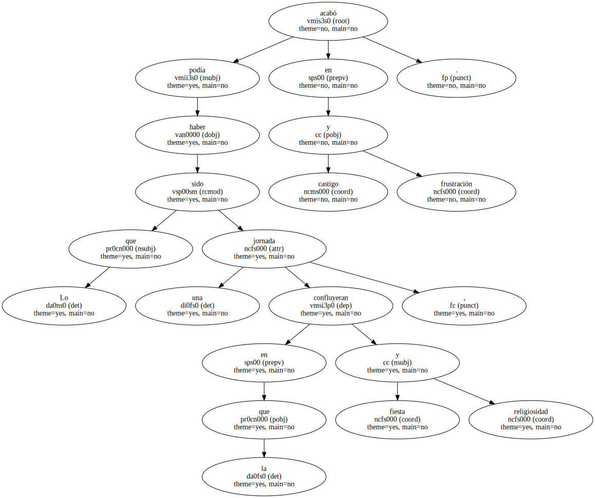
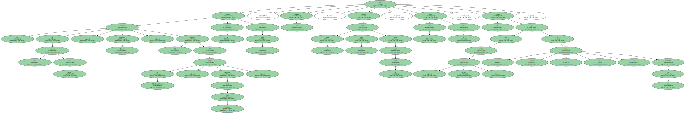
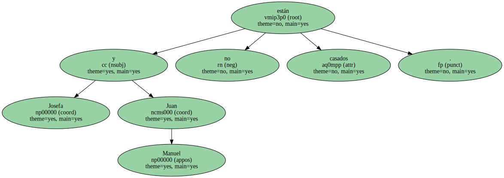
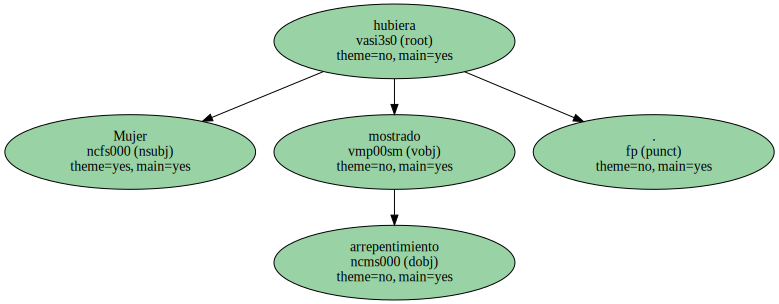
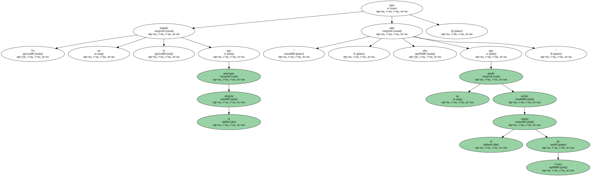
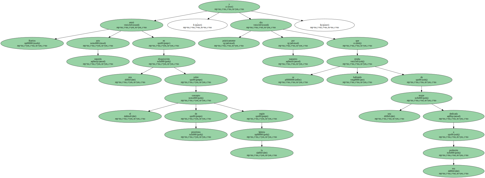
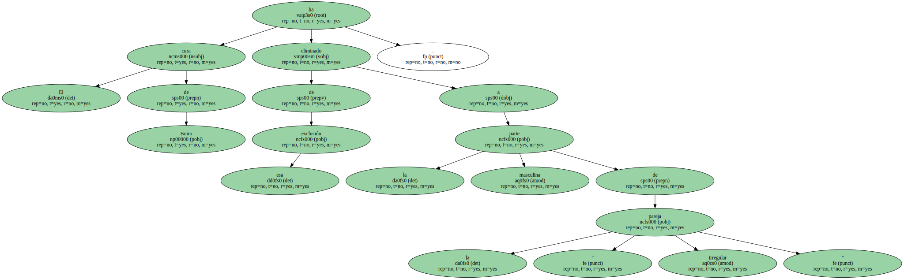

Un cura niega la comunión a la mujer de una pareja de hecho.
Lo que podía haber sido una jornada en la que confluyeran fiesta y religiosidad , acabó en castigo y frustración.
Eso fue lo que sucedió el domingo pasado en la parroquia de Boiro ( Coruña ) , cuando una niña , hija de Josefa e hijastra de Juan Manuel , el compañero de la madre , celebraba su Primera comunión en compañía de sus amigas y de buena parte del pueblo.
El sacerdote de la parroquia de Boiro , Marcelino Barrios , discípulo fiel del obispo de Mondoñedo-Ferrol , monseñor José Gea Escolano , ofreció la eucaristía a la niña y ésta comulgó , pero cuando la madre abrió la boca para recibir la hostia , el cura puso la mano y le recordó que estaba " en pecado " y que , además , no se había arrepentido de ello.
Josefa y Juan Manuel no están casados.
Los curas de la zona dan la razón al padre Barrios , pero los vecinos le han recordado que Jesucristo lavó los pies incluso a las prostitutas , cosa que en absoluto es Josefa , y que a ésta la han excluido como si fuera " una apestada ".
Marcelino Barrios ha reiterado que la pareja vive en adulterio y que una cosa es permitirles entrar en la Iglesia y festejar la comunión de la niña y otra muy distinta darles el sacramento.
Mujer hubiera mostrado arrepentimiento.
" Yo no le impido que practique la religión , pero ella sabe que no puede recibir el cuerpo de Cristo ".
Barrios entró acto seguido en una disquisición sobre el concepto de prostituta según la Iglesia , y prácticamente dio por supuesto que se estaba hablando de una mujer dedicada a esa profesión.
El cura no tuvo ningún inconveniente en dar la comunión a Juan Manuel , pareja de Josefa , porque , dijo , el caso sólo afecta a las mujeres adúlteras.

El obispo de Mondoñedo-Ferrol , Gea Escolano , que suele intervenir en los asuntos de la vida civil , se mostró partidario la semana pasada de negar la comunión a los católicos que vivan en " situación irregular " , incluidos quienes están casados pero sólo por lo civil.
El cura de Boiro ha eliminado de esa exclusión a la parte masculina de la " pareja irregular ".
